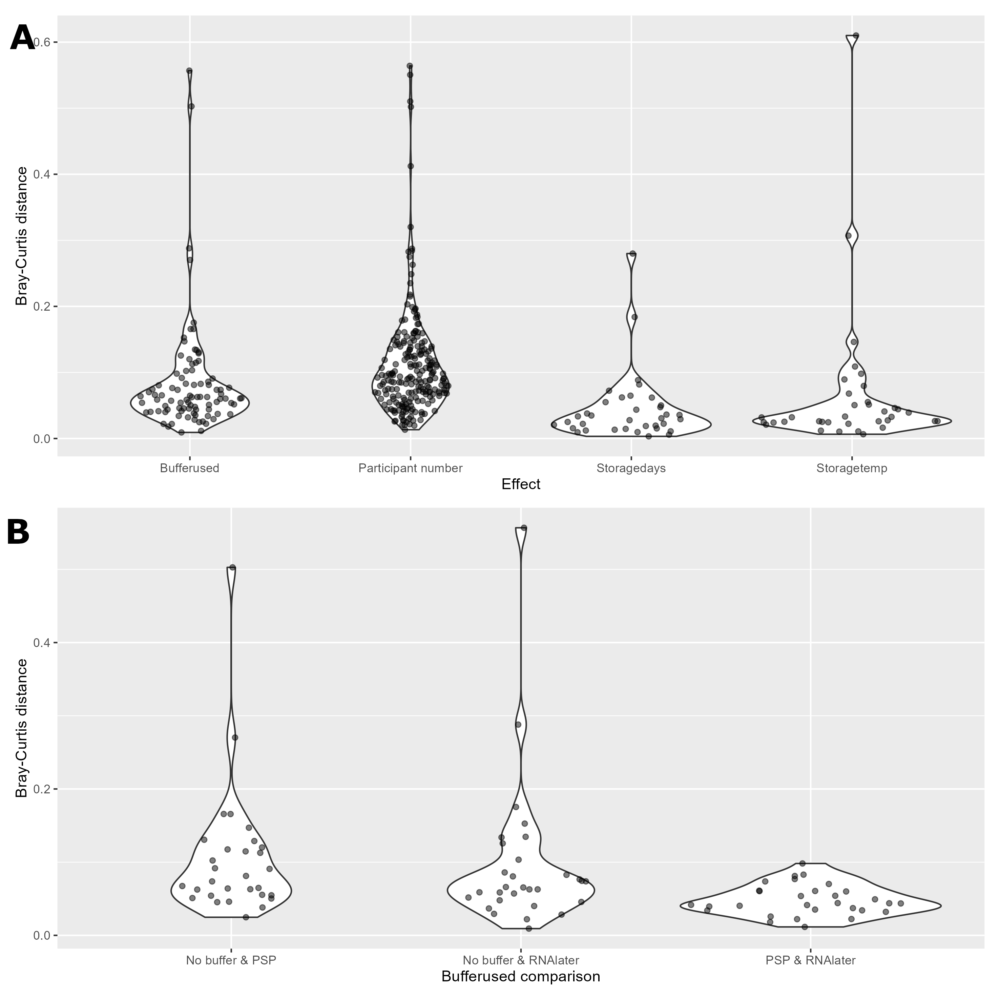

Chapter 13 Supp figure 7
Violin plots testing the effect of metadata categories on the SCFA beta diversity (Bray-Curtis) paired distances between samples. This excluded the ethanol samples. (A) Displays distances within effect groups (Bufferused, Participant number, Storagedays, and Storagetemp). Paired distances between samples which only differed by the specified effect on the x-axis are included. (B) Displays paired distances between the specified buffer comparisons. Only paired distances between samples with identical Participant number, Storagedays, and Storagetemp are included.

13.2 SCFA analysis
13.2.1 Table of all paired distances
#Load even sampling depth physeq produced for figure 4
load("./data/lipid_physeq_1k_object")
#Remove ethanol samples since they are so different they add too much variance
physeq_no_etoh <- subset_samples(physeq_1k, Buffer.type != "Ethanol")
#Might want to remove ethanol samples but we will leave them in for now
bray_curtis_df <- as.matrix(vegan::vegdist(x = t(microbiome::abundances(physeq_no_etoh)), method = "bray"))
#Convert doubled distance values and same comparisons to NAs
#Loop through columns starting at the 2nd
r <- 1
for (r in 1:nrow(bray_curtis_df)) {
bray_curtis_df[r,r:ncol(bray_curtis_df)] <- NA
}
#Extract metadata
metadf <- sample_data(physeq_no_etoh)
#Change col and row names to sample
colnames(bray_curtis_df) <- metadf$Sample.name
row.names(bray_curtis_df) <- metadf$Sample.name
#Get a metdata dataframe with:
# Sample name, Temp, Buffer, Participant, and storage days
columns_of_interest <- c("Sample_name", "Sample.number","Buffer.type", "Temp.Storage.time")
metadf <- metadf[,columns_of_interest]
#Edit
#Change Sample.number to Participant number
colnames(metadf)[2] <- "Participant number"
#Change buffer.type to Bufferused
colnames(metadf)[3] <- "Bufferused"
#Split temp.storage.time to temp and storage time
metadf$Storagetemp <- gsub(pattern = "\\|.*", replacement = "", metadf$Temp.Storage.time)
metadf$Storagedays <- gsub(pattern = ".*\\|", replacement = "", metadf$Temp.Storage.time)
#Change day to D for time
metadf$Storagedays <- gsub(pattern = " day", replacement = "D", metadf$Storagedays)
#Remove temp.storage.time column
metadf <- subset(metadf, select = -Temp.Storage.time)
#Change metadf rownames to sample names
row.names(metadf) <- metadf$Sample_name
#Combine metadata and distance matrix
#Ensure the row order is the same
identical(row.names(metadf), row.names(bray_curtis_df))
#rbind
bray_curtis_metadf_df <- cbind(metadf, bray_curtis_df)
#Convert to long
bray_curtis_long_df <- tidyr::pivot_longer(data = bray_curtis_metadf_df,
#longify the distance values by using the
#col names of the distance df
cols = colnames(bray_curtis_df),
names_to = "Sample_name_comp", values_to = "dist")
# #Change sample names of comp_samples names to remove _.*
# wunifrac_long_df$Sample_name_comp <- gsub(x = wunifrac_long_df$Sample_name_comp,
# pattern = "_.*", replacement = "")
#Remove rows where dist is NA
#Identical sample comparisons and duplicated sample comparisons
bray_curtis_long_df <- na.omit(bray_curtis_long_df)
#Remove rows where the samples are identical
bray_curtis_long_df <- bray_curtis_long_df[bray_curtis_long_df$Sample_name != bray_curtis_long_df$Sample_name_comp,]
#Add metadata for comparison sample
bray_curtis_long_df$Participant.number_comp <-
as.vector(unlist(metadf[bray_curtis_long_df$Sample_name_comp,"Participant.number"]))
bray_curtis_long_df$Bufferused_comp <-
as.vector(unlist(metadf[bray_curtis_long_df$Sample_name_comp,"Bufferused"]))
bray_curtis_long_df$Storagetemp_comp <-
as.vector(unlist(metadf[bray_curtis_long_df$Sample_name_comp,"Storagetemp"]))
bray_curtis_long_df$Storagedays_comp <-
as.vector(unlist(metadf[bray_curtis_long_df$Sample_name_comp,"Storagedays"]))
#Move dist to end row
bray_curtis_long_df$bray <- bray_curtis_long_df$dist
bray_curtis_long_df <- subset(bray_curtis_long_df, select = -dist)
#Remove unneeded objects
rm(physeq_1k, bray_curtis_metadf_df)13.2.2 Extract the paired distances
We will end up with a data frame with the following columns
- Distance (wunifrac)
- Effect (temp, buffer, etc.)
- Comparison (e.g. Baseline_RT)
- Sample pair (A1_B1)
#Create an empty dataframe first
dist_df_long <- as.data.frame(matrix(data = NA, ncol = 4, nrow = 0))
colnames(dist_df_long) <- c("bray", "effect", "comparison","sample_pair")
#First for participant
participant_df <- bray_curtis_long_df
#create new columns of combined buffer, temp, and days for ease
participant_df$buffer_temp_days <- paste0(participant_df$Bufferused, "_",
participant_df$Storagetemp, "_",
participant_df$Storagedays)
participant_df$buffer_temp_days_comp <- paste0(participant_df$Bufferused_comp, "_",
participant_df$Storagetemp_comp, "_",
participant_df$Storagedays_comp)
#Keep only rows where these 2 created rows are identical
participant_df <- participant_df[
participant_df$buffer_temp_days == participant_df$buffer_temp_days_comp,]
#Add effects column
participant_df$effect <- "Participant number"
#Add comparison column
participant_df$comparison <- paste0(participant_df$Participant.number, "_",
participant_df$Participant.number_comp)
#Add pairs column
participant_df$sample_pair <- paste0(participant_df$Sample_name, "_", participant_df$Sample_name_comp)
#Create df to add to main df
tmp_dist_df <- participant_df[,c("bray", "effect", "comparison", "sample_pair")]
#Add to dist data frame
dist_df_long <- rbind(dist_df_long, tmp_dist_df)
#Second is Buffer
buffer_df <- bray_curtis_long_df
#create new columns of combined participant, temp, and days for ease
buffer_df$participant_temp_days <- paste0(buffer_df$Participant.number, "_",
buffer_df$Storagetemp, "_",
buffer_df$Storagedays)
buffer_df$participant_temp_days_comp <- paste0(buffer_df$Participant.number_comp, "_",
buffer_df$Storagetemp_comp, "_",
buffer_df$Storagedays_comp)
#Keep only rows where these 2 created rows are identical
buffer_df <- buffer_df[
buffer_df$participant_temp_days == buffer_df$participant_temp_days_comp,]
#Add effects column
buffer_df$effect <- "Bufferused"
#Add comparison column
buffer_df$comparison <- paste0(buffer_df$Bufferused, "_",
buffer_df$Bufferused_comp)
#Add pairs column
buffer_df$sample_pair <- paste0(buffer_df$Sample_name, "_", buffer_df$Sample_name_comp)
#Create df to add to main df
tmp_dist_df <- buffer_df[,c("bray", "effect", "comparison", "sample_pair")]
#Add to dist data frame
dist_df_long <- rbind(dist_df_long, tmp_dist_df)
#Third is Storagetemp
temp_df <- bray_curtis_long_df
#create new columns of combined participant, buffer, and days for ease
temp_df$participant_buffer_days <- paste0(temp_df$Participant.number, "_",
temp_df$Bufferused, "_",
temp_df$Storagedays)
temp_df$participant_buffer_days_comp <- paste0(temp_df$Participant.number_comp, "_",
temp_df$Bufferused_comp, "_",
temp_df$Storagedays_comp)
#Keep only rows where these 2 created rows are identical
temp_df <- temp_df[
temp_df$participant_buffer_days == temp_df$participant_buffer_days_comp,]
#Add effects column
temp_df$effect <- "Storagetemp"
#Add comparison column
temp_df$comparison <- paste0(temp_df$Storagetemp, "_",
temp_df$Storagetemp_comp)
#Add pairs column
temp_df$sample_pair <- paste0(temp_df$Sample_name, "_", temp_df$Sample_name_comp)
#Create df to add to main df
tmp_dist_df <- temp_df[,c("bray", "effect", "comparison", "sample_pair")]
#Add to dist data frame
dist_df_long <- rbind(dist_df_long, tmp_dist_df)
#Fourth is Storagedays
days_df <- bray_curtis_long_df
#create new columns of combined participant, buffer, and temp for ease
days_df$participant_buffer_temp <- paste0(days_df$Participant.number, "_",
days_df$Bufferused, "_",
days_df$Storagetemp)
days_df$participant_buffer_days_temp <- paste0(days_df$Participant.number_comp, "_",
days_df$Bufferused_comp, "_",
days_df$Storagetemp_comp)
#Keep only rows where these 2 created rows are identical
days_df <- days_df[
days_df$participant_buffer_temp == days_df$participant_buffer_days_temp,]
#Add effects column
days_df$effect <- "Storagedays"
#Add comparison column
days_df$comparison <- paste0(days_df$Storagedays, "_",
days_df$Storagedays_comp)
#Add pairs column
days_df$sample_pair <- paste0(days_df$Sample_name, "_", days_df$Sample_name_comp)
#Create df to add to main df
tmp_dist_df <- days_df[,c("bray", "effect", "comparison", "sample_pair")]
#Add to dist data frame
dist_df_long <- rbind(dist_df_long, tmp_dist_df)13.2.3 Buffer deep dive
Here we want to look at the differences between the buffers. We want boxplots with the same values as the above one but separated by the comparison e.g.
- No buffer vs PSP
- No buffer vs RNAlater
- etc.
#Subset our data to only contian the buffer effect info
buffer_dist_df_long <- dist_df_long[dist_df_long$effect == "Bufferused", ]
#Change names and order of levels
buffer_dist_df_long$comparison <- gsub(pattern = "PSP_No buffer",
replacement = "No buffer & PSP",
x = buffer_dist_df_long$comparison)
buffer_dist_df_long$comparison <- gsub(pattern = "RNAlater_No buffer",
replacement = "No buffer & RNAlater",
x = buffer_dist_df_long$comparison)
buffer_dist_df_long$comparison <- gsub(pattern = "RNAlater_PSP",
replacement = "PSP & RNAlater",
x = buffer_dist_df_long$comparison)
#Change to factor and reorder
buffer_dist_df_long$comparison <- factor(buffer_dist_df_long$comparison,
levels = c("No buffer & PSP", "No buffer & RNAlater","PSP & RNAlater"))
#Create violin plot
buffer_alpha_violin <- ggplot(buffer_dist_df_long, aes(y = bray, x = comparison)) +
ggplot2::geom_violin() +
ggforce::geom_sina(alpha=0.5) +
labs(x = "Bufferused comparison", y = "Bray-Curtis distance")